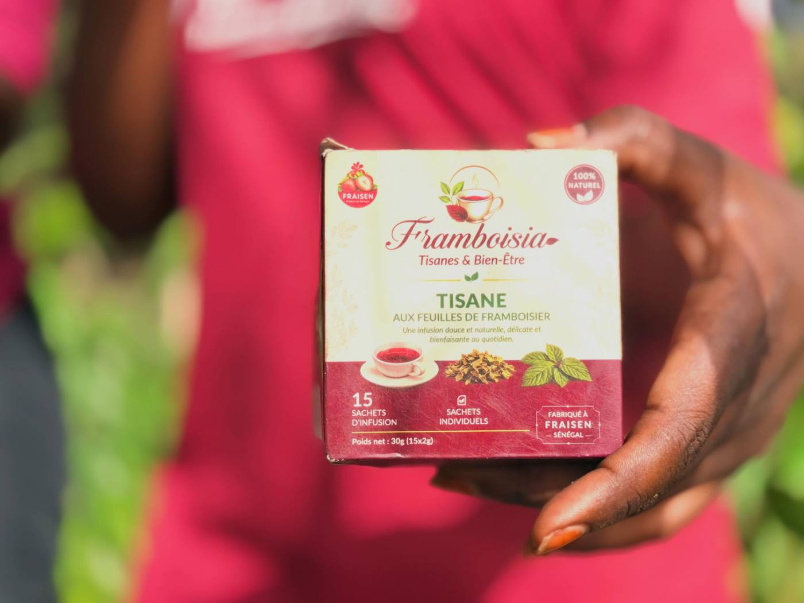
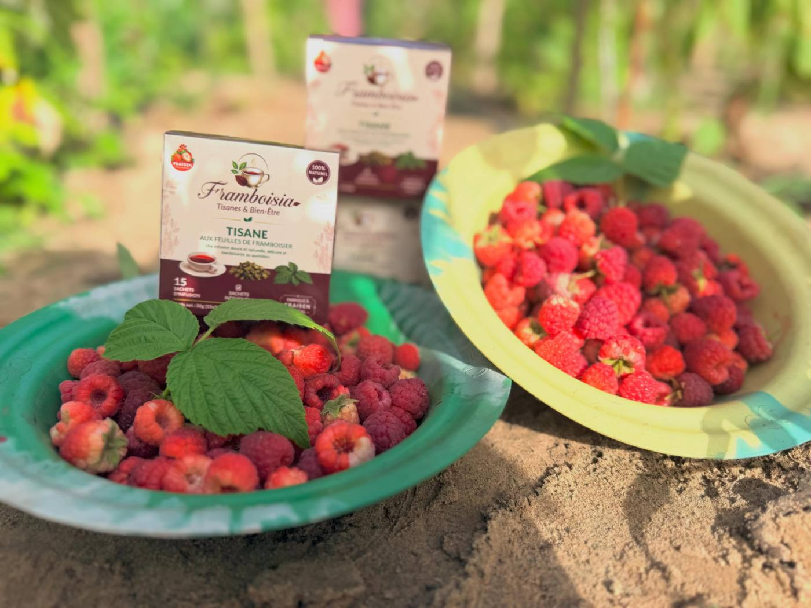
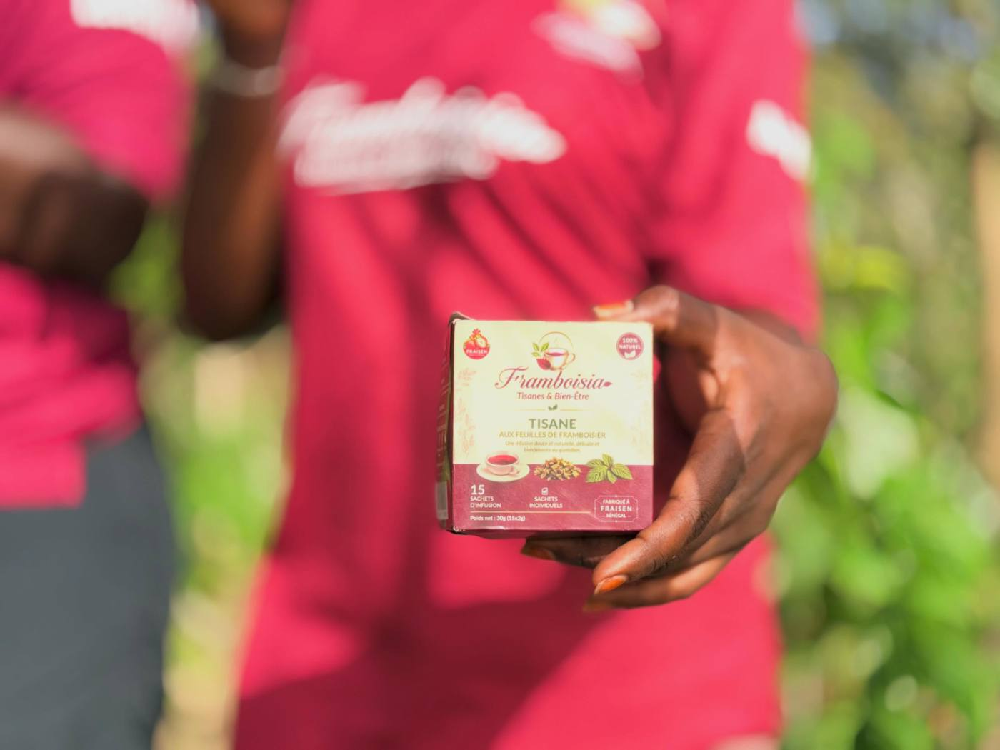
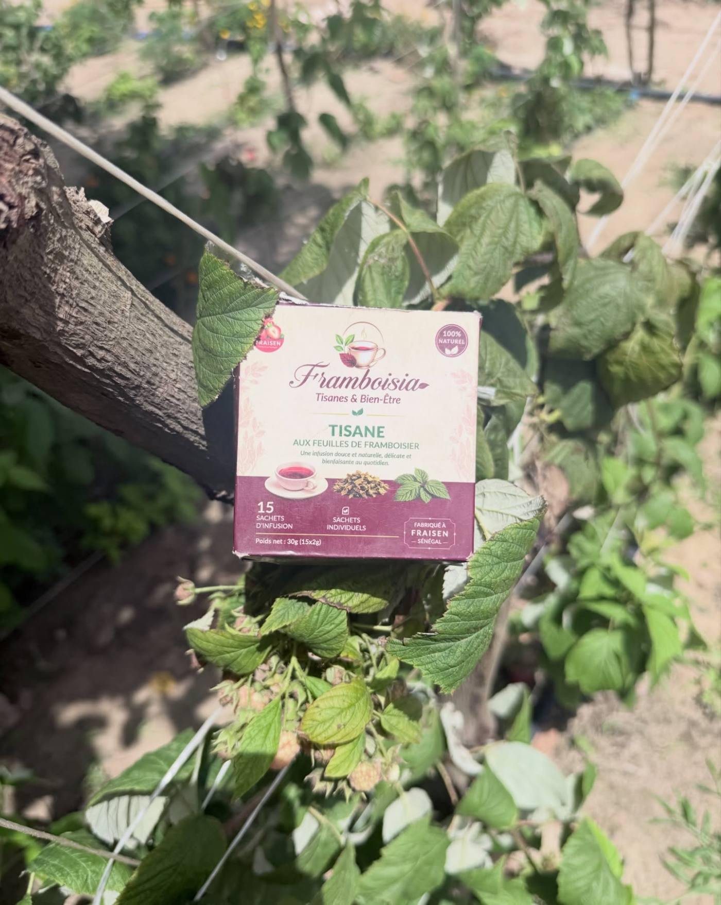

Tisane aux feuilles de framboisier
Une infusion douce et naturelle, délicate et bienfaisante au quotidien. 15 sachets individuels, 30 g.
Usages traditionnels
La feuille de framboisier est riche en vitamines A, B, C et E. Voici les usages pour lesquels elle est traditionnellement consommée.
Pour les hommes
Fertilité, endurance et performance.
Digestion
Ballonnements et diarrhée.
Femmes enceintes
Lorsqu'elles entrent dans leur période de travail.
Ces informations ne remplacent pas un avis médical. Pendant la grossesse ou sous traitement, demandez conseil à votre médecin ou sage-femme.
Questions fréquentes
Quel goût a la tisane ?
Un goût doux et végétal, proche d'un thé léger, sans amertume. Elle se boit nature, avec du miel ou glacée.
Combien de tasses par jour ?
Une à trois tasses par jour. Elle ne contient pas de théine, vous pouvez donc la boire le soir.
Comment commander et être livré ?
Sur place au centre FRAISEN à Bayakh, ou par WhatsApp au +221 78 416 99 09 (ou en DM sur Instagram).
Comment la conserver ?
Dans sa boîte, à l'abri de la chaleur, de la lumière et de l'humidité.
Je suis enceinte, puis-je en boire ?
La feuille de framboisier est traditionnellement consommée à l'approche de l'accouchement, quand commence la période de travail. Demandez conseil à votre médecin ou sage-femme avant d'en consommer.